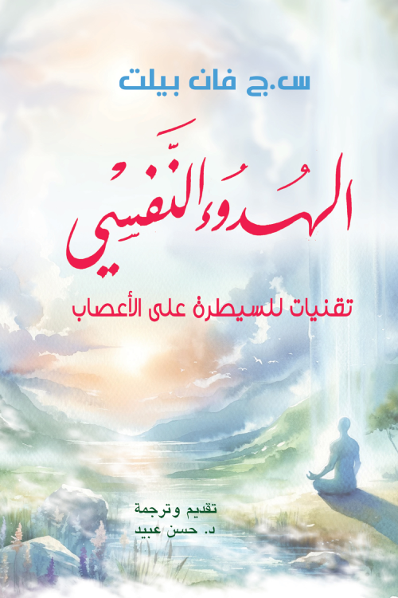

والتي يمكن أن تفوق في إرهاقها الأمراض الجسدية نفسها، مستعرضاً الأسباب الرئيسية لهذه الأعراض،
والتي غالباً ما تكون مرتبطة بالخوف والقلق الذي يمكن أن يشل القدرة على العمل اليومي."

في لغة أدبية رفيعة جعلتها من أهم 100 عمل أدبي تركي.

لكن ما يبدأ كرحلة بحث عن الثروة يتحول إلى رحلة اكتشاف للذات والكون."

بالإضافة إلى عاداتهم وأخلاقهم وتفوقهم في الزراعة والصناعة والتجارة.

ولكن ما يضره وحسبه من الإيمان أن كل خلية في جسمه تؤمن أن: لا إله إلا الله وأن محمداً رسول الله."

> وصراع أبدي بين العقل والعاطفة، تجعلك تعيد التفكير في معنى الوجود.